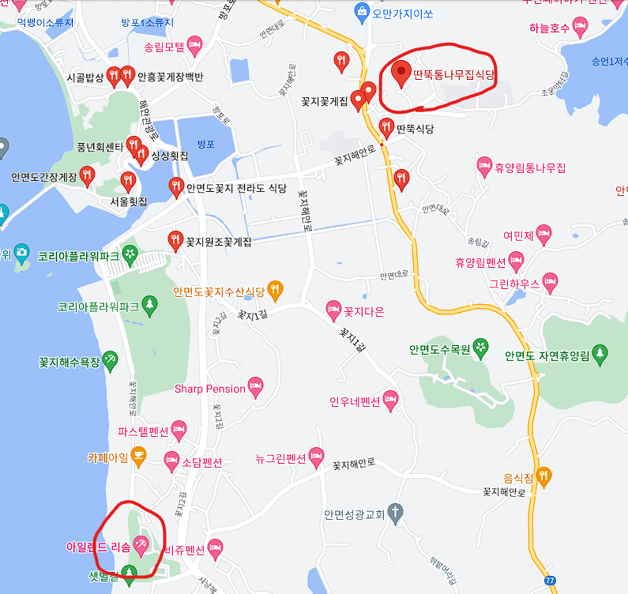

홈페이지로 돌아가는 버튼
안면도는 충청남도의 섬으로 대한민국에서 7번째로 큰 섬입니다.
안면도는 섬이라는 특수한 공간의 이점인 독립되어있다는 것과 바다를 즐길 수 있습니다.
한편으로는 배를 타고 들어가는 것이 아니라 육로를 통해서 접근할 수 있다는 것이
섬의 매력과 여행의 편의성 측면에서 두마리 토끼를 모두 잡을 수 있다는 장점이 있는 여행지 입니다.

자가용의 경우 서울에서 안면도까지 약 2시간 반이 소요됩니다.
통행료는 7600원이며 주유비는 약 26000원 정도가 발생합니다.
자세한 정보는 해당 사이트를 통해서 확인이 가능합니다.
대중교통의 경우 버스가 존재합니다.
버스의 경우 서울기준 2시간 20분 정도 소요되며 다양한 터미널을 통해서 접근이 가능합니다.
비용의 경우 약 12000원정도 발생합니다.

안면도의 맛집으로는 딴뚝통나무집식당을 추천합니다.
구글 평점 기준 4점 이상이며 리뷰수도 1500건이 넘을 정도로 검증된 매우 휼륭한 핫플레이스입니다.
이 식당에서는 안면도가 속한 태안군의 향토 음식인 게국지를 즐길 수 있습니다.
또한 곧 바로 설명드릴 숙소와도 위치적으로 매우 가까워서 이동에 편리함을 느끼실 수 있습니다.


안면도의 숙소로는 리솜아일랜드를 추천드립니다.
리솜아일랜드는 안면도의 주요 관광지인 꽃지 해수욕장에 존재합니다.
팬션형 또는 콘도형의 숙소를 제공하고 가격은 주중으로 약 1박에 25만원 이상입니다.
숙소내에 수영장, 여러 식당 등등 다양한 부대 시설을 가지고 있어 숙소내에서도 지루하지 않은 시간을 보낼 수 있습니다.
안면도 해수욕장중 꽃인 꽃지 해수욕장을 즐길 수 있고 도내 가장 좋은 시설을 갖춘 리솜아일랜드를 편한 여행객을 위한 숙소로 추천드립니다.
자세한 정보는 해당 사이트를 참고해주세요.